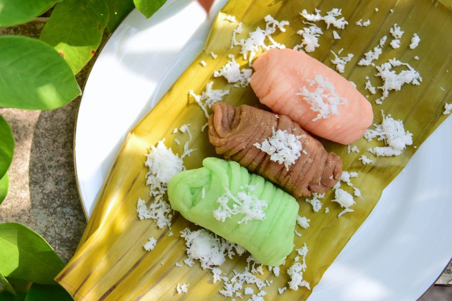

Bila kamu sedang berlibur di Bojonegoro, Jawa Timur, tak ada salahnya bila menyempatkan untuk berwisata kuliner.
Bojonegoro, mempunyai sejumlah tempat kuliner dengan makanan khas daerah tersebut yang wajib dicoba.
Berikut Kompas.com merangkum lima tempat makan di Bojonegoro yang cocok untuk kulineran:
Salah satu tempat kuliner yang patut anda datangi saat berada di Bojonegoro
adalah Warung Cipto Roso. Warung yang telah beroperasi sejak 1970-an ini menjajakan mie nyemek.Mie nyemek atau mie jawa tersebut, disajikan dengan ayam kampung yang disuwir.
Warung Cipto Roso masih memasak hidangan dengan menggunakan arang.
Selain mie nyemek, terdapat pula nasi goreng, mie goreng, dan rica-rica ayam yang bisa kalian nikmati.
Warung Cipto Roso beralamat di Jalan TGP Nomor 18 Banjerejo, Bojonegoro dan buka setiap hari dari pukul 16.00 hingga 21.00 WIB.
hidangan nasi pecel ini kerap disebut sebagai pecel andalan Bojonegoro karena cita rasanya yang nikmat. Kamu harus siap mengantre jika ingin makan di sini.
Nasi pecelnya disajikan dengan bumbu pedas, gurih, dan manis. Ditambah pula oseng tempe, taburan serundeng, dan tempe goreng hangat.
Harganya pun sangat terjangkau, karena nasi pecel dijual dengan harga Rp 7.000 per porsi. Warung Pecele Metal Mbak Lina beralamat di Jalan Kapten Ramli, Ledok Kulon, Bojonegoro.
Warung ini buka setiap hari pukul 20.00 hingga 23.59 WIB.
Bagi kamu yang doyan pedas, cobalah mampir ke Warung Leko Bojonegoro.
Salah satu menu makanan yang direkomendasikan adalah iga penyet ditambah dengan sambal penyet yang pedas dan gurih.
Menu lain yang bisa dipesan adalah ayam goreng tepung, gurame penyet, gurame sambal bledek, oseng iga cabe hijau, lalu oseng jamur, juga cah brokoli. Harga makanan berkisar Rp 35.000 hingga Rp 60.000.
Warung ini terletak di Jalan Wr. Supratman, tepatnya di Ruko Rajawali Square kavling 4 dan 5 Bojonegoro. Dibuka setiap hari mulai pukul 10.00 hingga 21.00 WIB.
Getuk ini disebut sebagai jajanan legendaris yang patut dicoba terutama untuk sarapan pagi.
Gethuk Makyah Kaliketek hingga kini menjadi salah satu kuliner tradisional yang masih sangat digemari.
Bila datang pada pagi hari, kamu bisa melihat sendiri proses pembuatan Getuk dan menikmati nya selagi hangat
Harganya juga sangat terjangkau yakni Rp 2.500 untuk satu porsi getuk. Jangan khawatir, di sini juga tersedia menu lainnya seperti ketan dan nasi kare.
Warung Gethuk Makyah buka setiap hari mulai pukul 08.00 WIB hingga dagangan terjual habis.
Kali ini ada hidangan bumbu kacang yang bisa kamu coba, yaitu Lontong Tahu Mbak Sri.
Seperti namanya, bahan dasar utama makanan ini adalah tahu dan lontong, ditambah gorengan tempenya dan bawang goreng yang melimpah.
Hanya dengan mengeluarkan biaya Rp 10.000, kamu sudah bisa makan hingga kenyang.
Alamat warung ini berada di Jalan Sarimulyo, Banjarejo, Bojonegoro. Dan buka setiap hari mulai pukul 18.00 hingga 23.00 WIB.
Date/Time:

Ini Adalah Contoh Makanan Khas Betawi Yaitu Kerak Telor

Ini Adalah Contoh Makanan Khas Madura Yaitu Sate

Ini Adalah Contoh Makanan Khas Makassar Yaitu Kue Pancong

Ini Adalah Contoh Makanan Khas Barabai Yaitu Apam Barabai

Contoh Makanan Khas Jawa Tengah Yaitu Kembang Goyang

Contoh Makanan Khas Jawa Tengah dan sekitarnya yaitu nasi tumpeng